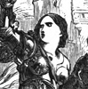

Collective Biographies of WomenAn Annotated Bibliography
Alison Booth
616.
Owen, Mrs. Octavius Freire [Emily]. The Heroines of History. New York: Carlton & Phillips; Cincinnati, OH: Hitchcock & Walden, 1854; 1856. London and New York: Routledge, 1854; 1858; [1877].
Search OCLC WorldCat for this title.
Search Google Books for this title.
Owen, Mrs. Octavius Freire [Emily]. The Heroines of History. New York: Carlton & Phillips; Cincinnati, OH: Hitchcock & Walden, 1854; 1856. London and New York: Routledge, 1854; 1858; [1877].
TOC: Jewish Era: Jael, or Jahel; Judith; Salamona; Mariamne. Classic Era: Semiramis; Penelope; Aspasia; Cornelia; Portia; Cleopatra; Arria; Boadicea; Zenobia. Modern Era: Jane de Montfort; Philippa of Hainault; Joan d'Arc; Margaret of Anjou; Isabella of Castile; Catherine de Medici; The Lady Jane Grey; Mary, Queen of Scots; Madame de Maintenon; Marie Antoinette. .
British Library. See 391.
-
Boadicea
-
Judith
-
Semiramis
-
Jane de Montfort
-
Joan of Arc
-
Margaret of Anjou
-
Isabella of Castille
-
Catherine de Medici
Search OCLC WorldCat for this title.
Search Google Books for this title.